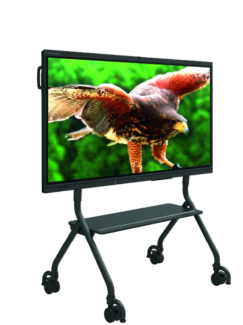
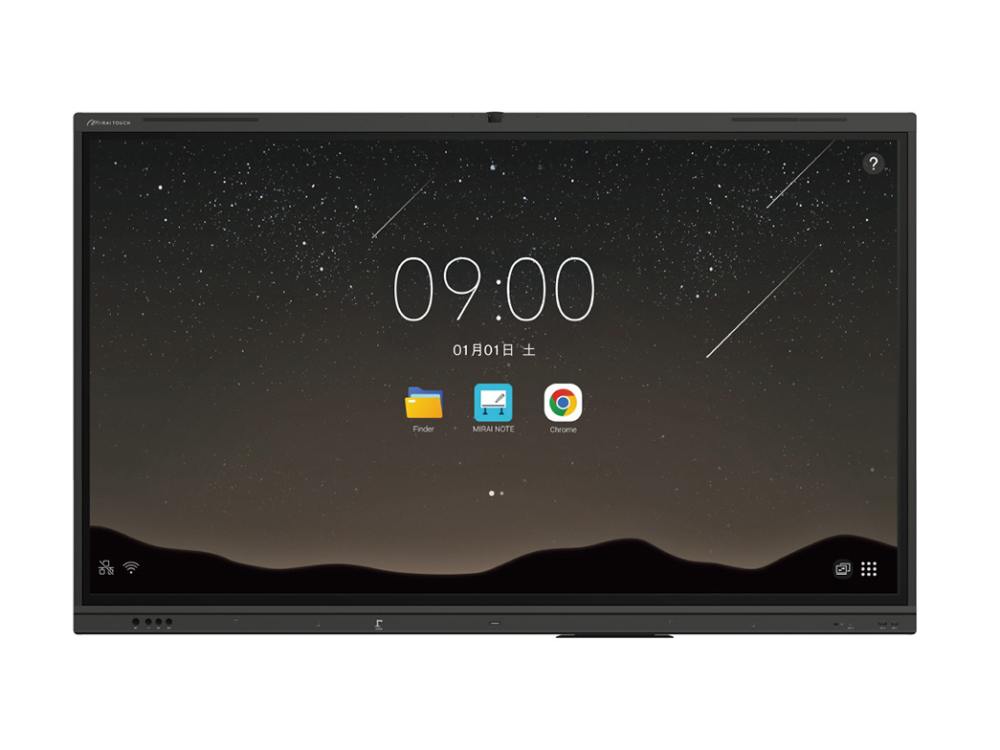
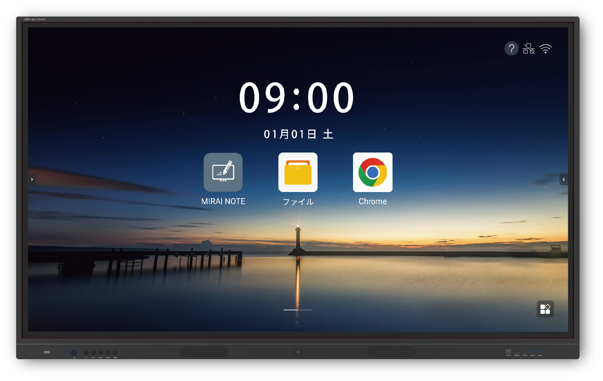

本体にカメラを2基搭載。教室の様子の記録やオンラインでのやり取り、手元の資料を映して見せる使い方まで、「映して伝える」授業の幅が広がります。
Kokuban BASE 取り扱いブランド

さつき株式会社｜インクルーシブ電子黒板 MIRAI TOUCH
MIRAI TOUCH（ミライタッチ）電子黒板
全国の教育現場に広がる、扱いやすさ重視の1台。
2025年に累計出荷7万台を突破し、幼稚園・保育園から小中高、大学まで幅広い教育機関で導入されているブランドです。授業中に迷わず使える操作性や、先生方が日常的に使い続けやすい設計を重視したい場合に候補へ入れやすい製品群です。ICTが得意な先生だけでなく、これから電子黒板を使い始める先生にもなじみやすく、校内全体での定着を見据えた導入計画にも向いています。
実績の出典：MIRAI TOUCH公式 ›65型75型＋27型（個別指導向け）

- 累計出荷7万台突破2025年・メーカー公式発表
- インクルーシブ設計だれにでも使いやすい電子黒板
MIRAI TOUCHの3つの特長
Google WorkspaceやClassroomを使う学校と相性の良いChrome OS搭載モデルを用意。普段のGoogle環境を、そのまま大画面の授業に活かせます。
音が上方向へ広がる天面スピーカーを採用し、後ろの席でも聞き取りやすいのが特長。動画教材やリスニングでの「聞き返し」を減らせます。
MIRAI TOUCHの価格の目安
| 本体 | 約38万〜52万円（税抜） | サイズ・スペックで変動。65・75型（＋個別指導向けの27型）から選べます |
|---|---|---|
| スタンド | 約5万〜12万円 | 移動式か固定式かで変わります（純正品を推奨） |
| 壁掛け金具・設置工事 | 要見積もり | 壁の補強が必要な場合があります |
| 延長保証（5年） | 月々数百円程度 | メーカー保証は通常1年です |
| 送料 | 都度見積もり | 時期・台数で変わります |
※ 金額は弊社取扱い製品全体の目安です（税抜）。MIRAI TOUCHのサイズ別の正確な金額は、教室の条件によって変わるためお見積りでご案内します。費用の内訳は電子黒板の価格・費用の記事で、リースの月額はリースのページで詳しく解説しています。
Kokuban BASEスタッフより
Kokuban BASE 選定サポートチーム
「ICTが得意な先生だけが使える」にならないのがMIRAI TOUCHの良さです。操作に迷いにくいので、校内のどの先生でも同じように授業で使えます。全教室への導入や、校内での定着を重視される学校・塾に自信を持っておすすめしています。
MIRAI TOUCHの評価・評判｜現役講師が実機を書き比べた結果
学習塾歴30年超の吉本 格先生（会員制難関指導専門塾elio 中学受験理科主任（学習塾歴30年超））が、Kokuban BASEの展示実機で5ブランドを書き比べました。MIRAI TOUCHについて分かったことを、良い点と確認しておきたい点に分けて整理します。全文は本音レビュー記事でお読みいただけます。
良い点
- 40枚の確認テストPDFがページごとに分かれて一気に読み込めます。板書をノート単位で保存でき、年度初めに入れておけば教材ライブラリとして1年使えます。
- ページ番号を入力するだけで目的のページへ飛べます。授業中にページをめくり続ける数秒がなくなります。
- 電源・入力切替・外部入力端子が本体前面にあり、授業中に機器の裏へ回り込む必要がありません。
- スピーカーが本体上部にあり、音が天井に反射して教室の後方まで届きやすい構造です。
気になる点・確認しておきたい点
- すりガラス寄りの書き味です。書くときの手応えをしっかり感じたい先生は、摩擦が大きいタイプも同じ日に触って比べてください。
- 86型以上の展開がないため、30名を超える教室では他ブランドの86型以上も候補に入れる必要があります。
「これ、年度の最初に入れて保存しておけば、もういちいちダウンロードしなくていいですよね。（中略）ホワイトボードだけではなく、教材ライブラリですね」
向いている教室：確認テストやプリントなど、決まった教材を毎年繰り返し使う教室。板書量が多く、図や地図をその場で描き起こす教科が中心の教室。個別指導ブースを持つ学習塾。
標準搭載機能・スペック
標準搭載機能
 PDF表示・書き込み〇
PDF表示・書き込み〇 ホワイトボード〇
ホワイトボード〇 画面分割〇
画面分割〇 無線投影〇
無線投影〇 QR共有〇
QR共有〇 クラウド連携〇
クラウド連携〇 スクリーンショット〇
スクリーンショット〇 ブラウザ利用〇
ブラウザ利用〇 Google Play〇
Google Play〇 内蔵カメラ〇
内蔵カメラ〇 内蔵マイク〇
内蔵マイク〇 AI活用〇
AI活用〇
カタログスペック
OS・メモリ・CPUなどの詳細スペックは、モデル・サイズにより異なります。ご検討中の教室環境・用途に合わせて、最新の仕様書とお見積りをお送りします。
仕様書を問い合わせる ›
ギャラリー



記事でもっと知る


.png?w=640)
サイズの目安
65型推奨人数：15名まで
75型16〜30名：75型以上
27型個別指導・1対1のブースに置ける卓上サイズ
※ 27型は個別指導向けの例外サイズです。生徒の目の前に置いて、書き込みながら教えられます。
MIRAI TOUCHについてよくある質問
Q.MIRAI TOUCH（ミライタッチ）の価格はいくらですか？
サイズとスペックで変わります。弊社取扱い製品全体では本体が約38万〜52万円（税抜）、スタンドが約5万〜12万円が目安です。個別指導ブース向けの27型は大型モデルと構成が異なるため、用途をお知らせいただければ個別にお見積りします。
Q.MIRAI TOUCHの保証は何年ですか？
メーカー保証は1年が基本です。Kokuban BASEでは5年の延長保証をご用意しており、費用は月々数百円程度が目安です。保証内容は製品・契約により異なるため、お見積り時に個別にご案内します。
Q.個別指導ブースに置ける小さいサイズはありますか？
あります。MIRAI TOUCHには机の上に置ける27型モデルがあり、1対1や少人数の個別指導で、生徒の目の前で書き込みながら教えられます。集団授業の教室には65型以上をおすすめしています。
Q.他のブランドとの違いを知りたいです。
価格・サイズ・機能・講師の評価をまとめた5ブランドの比較は、「【2026年後期版】電子黒板おすすめ比較」で確認できます。実際の書き心地や表示の見え方は数字に出ないため、ショールームまたはオンラインデモで見比べていただくのが確実です。
MIRAI TOUCHを、実際に見て・触れて確かめませんか？
ショールームやオンラインで、実機の書き心地や操作感をご案内します。ご予算・教室に合わせたお見積りも無料です。